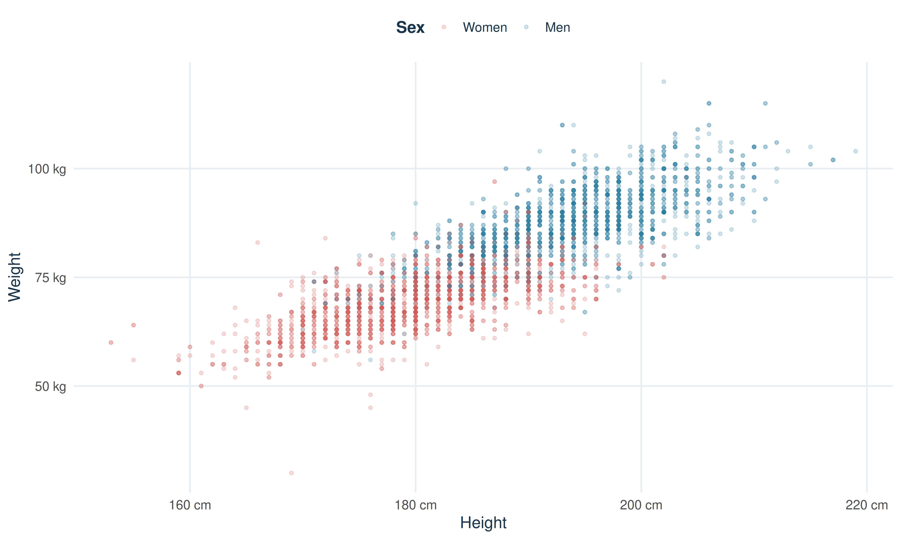
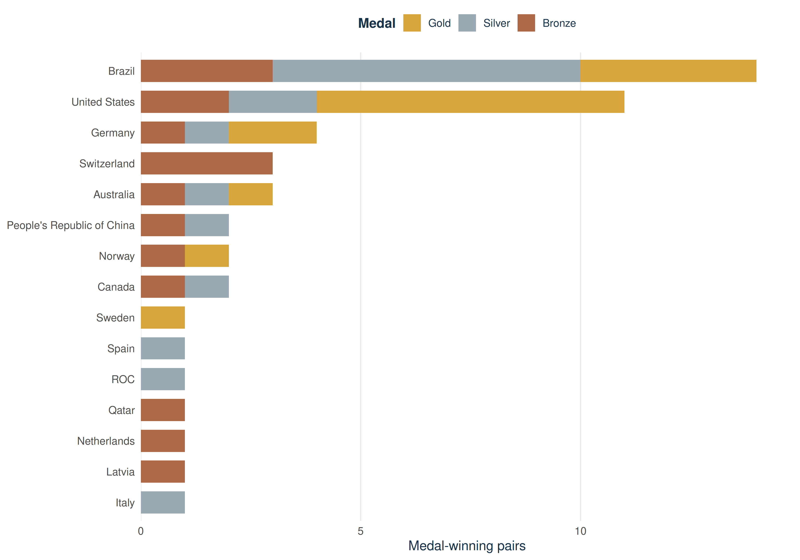
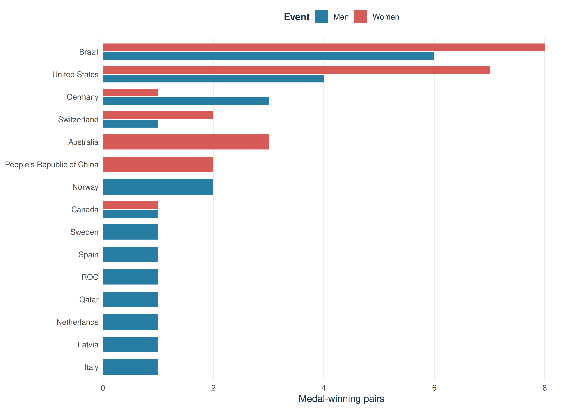
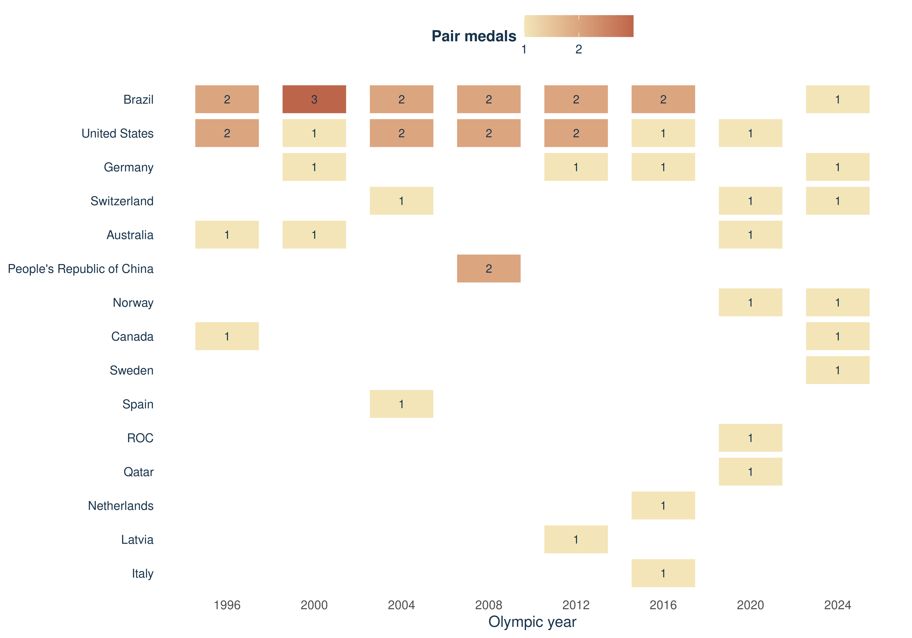

The Olympics Through Data
How has Olympic beach volleyball success varied by country and gender from 1996 to 2024?
Beach volleyball has been part of the Summer Olympics since 1996. This project combines athlete-level volleyball records with medal results to examine which countries have reached the podium, how those results differ between men’s and women’s events, and how the medal map has shifted over time.
4,792 all-volleyball athlete-event records
4,159 complete height-and-weight records plotted
756 beach-volleyball athlete-event records, 1996–2024
48 verified medal-winning pairs
Research question
How has Olympic beach volleyball success varied by country and gender from 1996 to 2024?
The analysis compares countries’ medal-winning pairs, looks at men’s and women’s podium results side by side, and follows medal-winning countries across the eight Summer Games in the period.
A broader look at volleyball athletes
Height and weight across all volleyball events
This scatterplot uses volleyball_athletes, which includes both indoor and beach volleyball and every edition included in the package. Each point is one athlete-event record with non-missing height, weight, and sex: 4,159 actual observations. The scatterplot is context for the medal analysis below; it is not restricted to beach volleyball or to 1996–2024.
The transparent points make dense clusters visible while preserving less common measurements. Compare the overlap and spread between the two recorded sex categories; these descriptive measurements do not explain athletic performance on their own.
Beach-volleyball medal results
Event filtering and medal-count method
For the medal analysis, olympic_athletes is filtered to Summer volleyball records from 1996 through 2024. Before filtering, the actual event labels were inspected. The dataset uses different label formats over time:
| Event name as stored in olympic_athletes |
|---|
| Beach Volleyball Beach Volleyball, Men |
| Beach Volleyball Beach Volleyball, Women |
| Beach Volleyball Men’s Beach Volleyball |
| Beach Volleyball Women’s Beach Volleyball |
The package has complete athlete-level beach-volleyball medal entries through 2016; its beach-volleyball medal values are missing for Tokyo 2020 and Paris 2024. Rather than count those missing values as zero, the six 2020 and six 2024 winning pairs were added from the Olympedia Tokyo results and Paris results.
For 1996–2016, the two athlete rows for each medal-winning pair were deduplicated by Games, event, sex, country code, and medal. The package records confirm two distinct athletes per medal-winning pair. The official 2020 and 2024 result tables already identify each winning pair once. The combined data contain 48 pair medals—six per Games across eight editions—and duplicate medal keys are checked during rendering.
Medals by country
Each bar represents the number of medal-winning pairs for a country across both men’s and women’s events. The colors distinguish gold, silver, and bronze.

Counting teams rather than athlete rows keeps the podium totals aligned with the competition: a medal won by a pair contributes one country medal, not two.
Across both events, Brazil leads with 14 medal-winning pairs. The top country is Brazil in women’s events and Brazil in men’s events.
Men’s and women’s results
Each beach-volleyball event awards one gold, one silver, and one bronze medal at each Games. The paired bars show how those medal-winning teams are distributed among countries in men’s and women’s events.

Since the number of podium places is the same for each event, differences between the bars show which countries earned medals in each gender category—not a difference in the total number of medals available.
The leading country is Brazil in women’s events and Brazil in men’s events. The bars show how the remaining medal-winning pairs are distributed among other countries.
How the medal map changed over time
Each tile shows a country’s total medal-winning pairs at one Olympic edition, combining men’s and women’s events. Empty spaces indicate that the country did not win a beach-volleyball medal at that Games.

The timeline makes repeat podium appearances and new medal-winning countries easy to spot. A country can earn up to two pair medals in one edition—one in each event.
Methodology and sources
The scatterplot uses every row in volleyball_athletes with observed height, weight, and sex; it covers indoor and beach volleyball, not just the study events. The medal analysis uses the beach-volleyball events in olympic_athletes from 1996 through 2024, with official pair-level results supplementing the package’s missing beach medals for 2020 and 2024. Countries are matched by National Olympic Committee (NOC) code. No observations are simulated, and missing measurements are excluded only from the scatterplot. The package’s sex field is shown as Women/Men to match its event categories; it is the dataset’s classification, not a measure of gender identity.
Dataset citation: Ismay, C. olympicAthletes: Olympic Athlete Event Data, Athens 1896 to Milano-Cortina 2026. R package, version 0.5.10. Package repository and provenance. The historical data extend R. Griffin’s Olympic history dataset; later editions use data from Olympedia.
Supplemental medal results: Olympedia, Tokyo 2020 beach volleyball and Paris 2024 beach volleyball.
Re-render this site with quarto render. The R package must be installed first; for a fresh R installation, run remotes::install_github(“moderndive/olympicAthletes”).